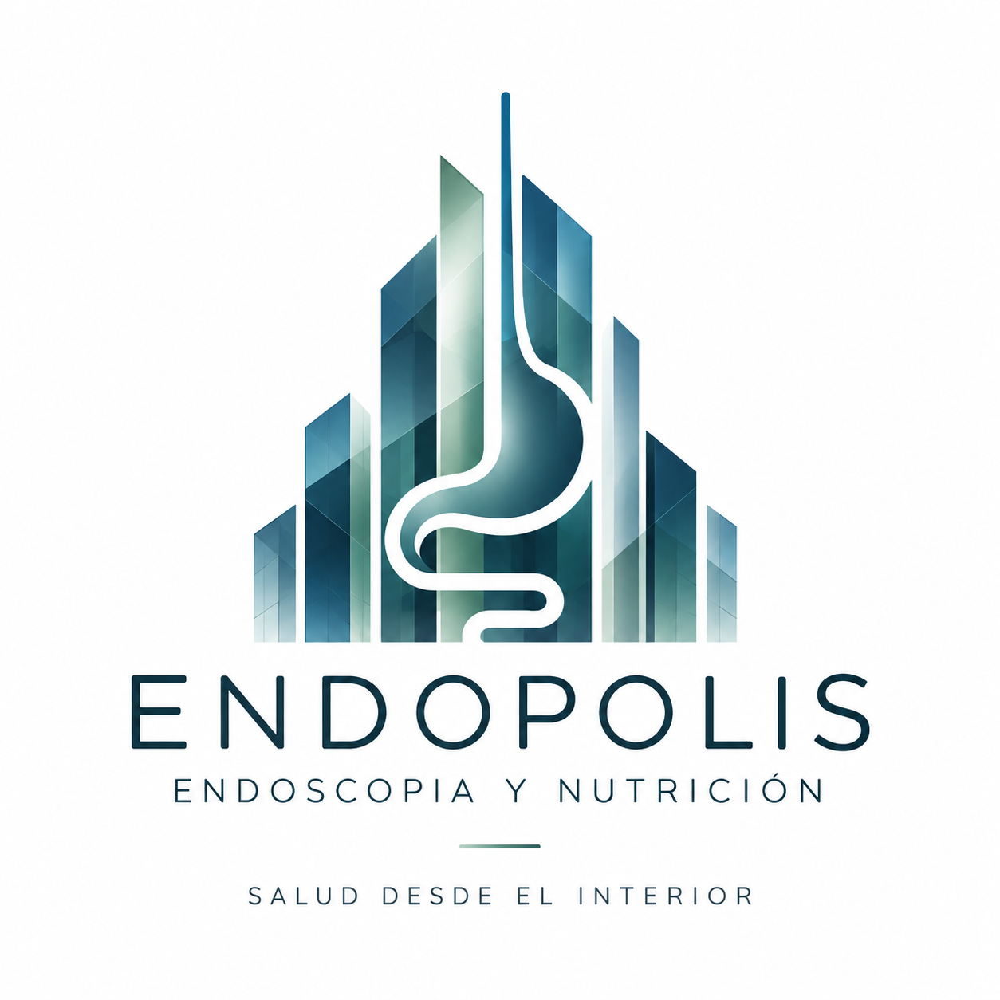
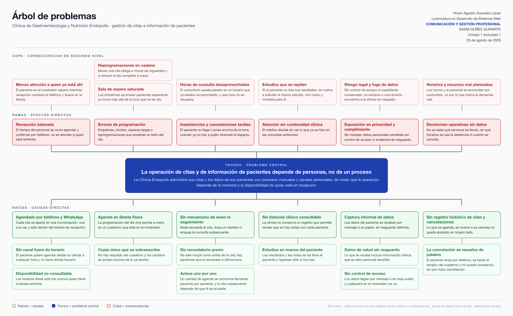
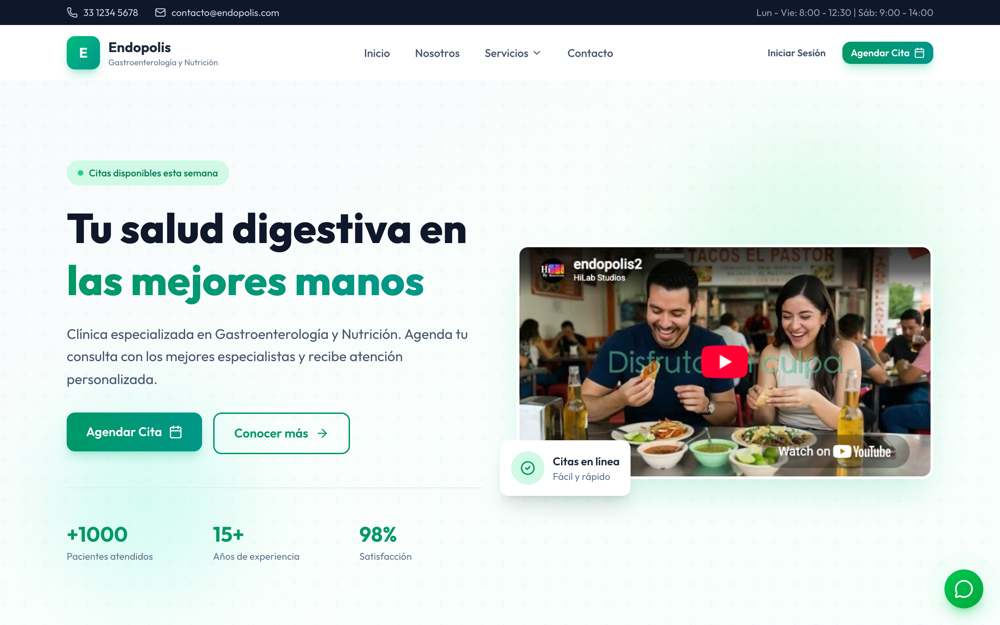
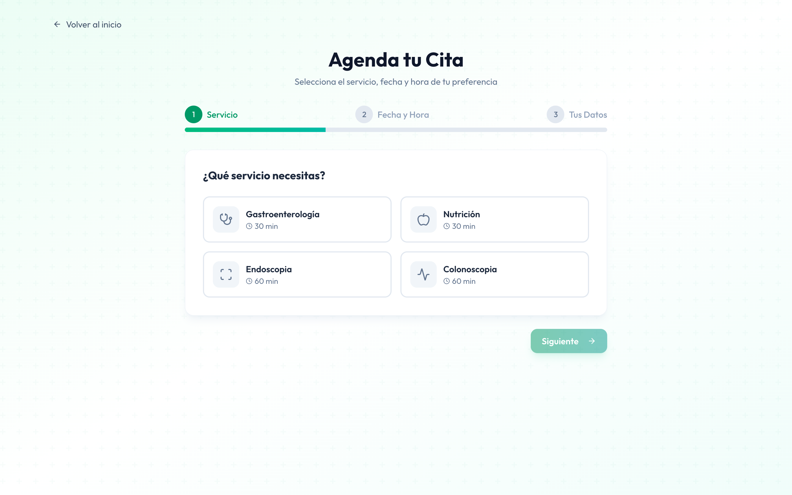

En la Clínica de Gastroenterología y Nutrición Endopolis las citas se agendaban desde un teléfono Android viejo, de gama baja, elegido porque era barato y bastaba para llamadas y WhatsApp. El miércoles 9 de septiembre falló el puerto de carga. El teléfono enciende, pero ya no carga: quedó fuera de servicio, y con él la agenda.
El chip pasó a otro teléfono para atender urgencias por llamada. Eso recuperó la línea, no la agenda ni el historial de conversaciones. El problema nunca fue el número telefónico: fue dónde vivía la información.
Falla el puerto de carga del teléfono con el que se agenda.
Sin agenda ni WhatsApp de la clínica.
El chip pasa a otro teléfono: vuelve la línea, no la agenda.
Tercer día sin agenda. Puede haber consulta en sábado.
Cada diapositiva lleva una sola idea; el detalle se abre al clic (Nediger, 2018). Se navega con las flechas o tocando los bordes. Con Esc se ve el mapa completo.
Lo que el árbol predijo en agosto y septiembre comprobó.
Ir a la sección → 02Un sistema en el navegador, con la información en una base de datos y no en un teléfono.
Ir a la sección → 03Cuánto se pierde sin el proyecto, cuánto cuesta hacerlo y en cuánto tiempo se recupera.
Ir a la sección →O sigue en orden: después del menú viene El problema.

Árbol de problemas de Endopolis. Elaboración propia, versión final del 3 de septiembre de 2026. Clic para ampliar.
El árbol se leyó de abajo hacia arriba en la actividad 1.1: raíces, tronco y copa (Betancourt, 2016). En la siguiente diapositiva se recorre cadena por cadena.
Menos atención a quien ya está en el mostrador.
Recepción saturada: el tiempo se va en contestar y confirmar.
Cada cita se aparta en una conversación, una a la vez y sólo en horario de recepción.
Se lee de abajo hacia arriba, como el árbol: la raíz explica la rama y la rama produce la copa.
Reprogramaciones en cadena y sala de espera saturada.
Empalmes, olvidos y esperas largas.
La agenda del día vive escrita a mano en un cuaderno, copia única que se sobreescribe.
Se lee de abajo hacia arriba, como el árbol: la raíz explica la rama y la rama produce la copa.
Horas de consulta que no se recuperan.
Inasistencias y cancelaciones encima de la hora.
Nada recuerda la cita, avisa un cambio ni empuja la consulta subsecuente.
Se lee de abajo hacia arriba, como el árbol: la raíz explica la rama y la rama produce la copa.
Estudios que se repiten, con costo y molestia. Conservar el expediente es obligatorio (Norma Oficial Mexicana NOM-004-SSA3-2012, 2012).
El médico decide sin ver lo que ya se hizo.
Los estudios se los lleva el paciente y regresan sólo si los trae.
Se lee de abajo hacia arriba, como el árbol: la raíz explica la rama y la rama produce la copa.
Riesgo legal y fuga de datos.
Exposición en privacidad y cumplimiento.
Los datos del paciente llegan por mensaje o en hoja suelta, sin control de acceso.
Se lee de abajo hacia arriba, como el árbol: la raíz explica la rama y la rama produce la copa.
Horarios y recursos acomodados por costumbre, no por demanda.
Decisiones operativas sin datos.
Lo que se agenda, se mueve o se cancela no queda anotado en ningún lado.
Se lee de abajo hacia arriba, como el árbol: la raíz explica la rama y la rama produce la copa.
El árbol de agosto decía en abstracto que la operación depende de personas y no de un proceso. El 9 de septiembre lo dijo un puerto de carga.
WhatsApp está anclado a un número y a un teléfono padre. Las versiones de escritorio y web dependen de ese teléfono. Si se rompe sin respaldo, el historial no se recupera. Ya había fallado antes: el almacenamiento se llenaba de tanta cita y la aplicación dejaba de funcionar.
WhatsApp es un chat privado e informal. Los pacientes le tienen demasiada confianza: intentan resolver por ahí lo que requiere consulta y mandan estudios y resultados por el chat.
Lo que viaja por ese chat es información de salud, dato personal sensible bajo la ley mexicana (Ley Federal de Protección de Datos Personales en Posesión de los Particulares, 2025). Es la rama de exposición legal del árbol, ocurriendo en vivo.
Un sistema de citas que se gestiona desde cualquier navegador, con usuario y contraseña, y con toda la información en una base de datos. Recepción lo usa desde la computadora del consultorio; el paciente, desde una aplicación web sencilla en su celular, sin instalar nada.
WhatsApp se queda sólo como canal de aviso: por ahí llega el enlace que abre la aplicación. Al paciente se le dirige del chat a un medio formal; no se le atiende dentro del chat.
Una sola agenda, consultable desde cualquier equipo con acceso. Los horarios libres los ve quien agenda, no sólo quien tiene la libreta enfrente. Cada cita, cambio y cancelación queda registrada con fecha.
Responde a las cadenas 1, 2 y 6 del árbolEl paciente agenda, confirma o mueve su cita desde su celular, a cualquier hora, dentro de los horarios que la clínica define. Ve su próxima cita y su historial.
Responde a la causa "sin canal fuera de horario"Recordatorio antes de la cita y aviso cuando la agenda cambia, por correo o SMS, con el enlace a la aplicación. WhatsApp deja de ser el lugar donde se atiende.
Responde a la cadena 3Los datos del paciente se capturan una vez, en un formulario, y quedan en la base con control de acceso por usuario. Nada de estudios por chat. El expediente clínico completo es una etapa posterior; aquí se resuelve dónde y cómo se guarda lo que hoy viaja por mensaje.
Responde a las cadenas 4 y 5En noviembre de 2025 construí un prototipo de este sistema con Next.js, Prisma y PostgreSQL: página pública, registro, formulario de agendado, portal del paciente y panel de administración. La interfaz existe y se navega; la capa de datos nunca quedó operativa y el sistema no llegó a usarse en la clínica. La propuesta retoma ese prototipo, le pone la base de datos que le faltó y le agrega los avisos y el acceso del paciente.


Capturas reales de endopolis.vercel.app, tomadas el 12 de septiembre de 2026. Prototipo de 2025, sin base de datos en operación. Clic para ampliar.
El retorno de inversión compara lo que un proyecto devuelve con lo que costó. Se calcula restando la inversión a la ganancia, dividiendo entre la inversión y multiplicando por cien (Vaz, 2022). En video: ingresos menos costos, entre costos, por cien (Cyberclick Marketing Digital, 2022, 0:29).
Un ROI de 100% significa que la inversión se recuperó completa; cero, que no hubo ganancia ni pérdida; negativo, que todavía no se recupera lo invertido (Pursell, 2025). Para Endopolis la ganancia es el dinero que hoy se pierde y el sistema recuperaría; la inversión es lo que cuesta construirlo y operarlo un año.
| Concepto | Cifra | Origen |
|---|---|---|
| Citas atendidas | 5 por semana, 260 al año | Dato Piso conservador: al menos una al día de lunes a viernes. |
| Citas que se pierden por inasistencia, empalme o cancelación tardía | 15%, 39 al año | Supuesto Declarado; rango de 10 a 15%. |
| Valor de cada cita perdida | $800 si es consulta, $3,500 si es endoscopia | Dato Precios cargados en el prototipo. |
| Un incidente como el de septiembre | 3 citas no atendidas en tres días | Supuesto Caso más inocuo; se supone uno al año. |
| Tiempo de recepción en agendar a mano | 3 horas diarias, 780 al año | Dato Tiempo familiar, no sueldo: no se convierte a pesos. |
Se pierde al año: $33,600 si todo son consultas · $147,000 si son procedimientos
| Concepto | Cifra | Origen |
|---|---|---|
| Citas perdidas que el sistema recupera | La mitad, con recordatorio y agenda consultable | Supuesto Declarado. |
| Incidentes por teléfono | Ninguno: la agenda ya no vive en un dispositivo | Consecuencia Directa de la propuesta. |
| Horas de recepción | Siguen sin contarse en pesos | El ROI no las necesita para calcularse. |
Se recupera al año: $18,000 en escala consulta · $78,750 en escala procedimiento
| Concepto | Cifra | Origen |
|---|---|---|
| Desarrollo | 60 horas (10 semanas × 6 h, del 14 de septiembre al 22 de noviembre) × $124.62 = $7,477.20 | Tarifa: $16,000 mensuales entre 173.33 horas por 1.35. |
| Reserva del 10% | $747.72 | Mismo criterio. |
| Infraestructura 12 meses | Vercel Pro 20 USD + Supabase Pro 25 USD al mes + dominio, a 16.8748 pesos por dólar = $9,303.58 | Precios del 6 de septiembre de 2026 (Banco de México, 2026; Porkbun, s. f.; Supabase, s. f.; Vercel, s. f.). |
| Mantenimiento | 4 horas al mes × 12 = $5,981.76 | Mismo criterio de tarifa. |
| Avisos por correo o SMS | $100 al mes = $1,200.00 | Supuesto Por validar. |
Inversión del primer año: $24,710.26 · Operación anual desde el segundo año: $16,687.67
ROI del primer año si todo lo que se pierde son consultas; la inversión se recupera en 16.5 meses.
ROI del primer año si lo que se pierde son procedimientos; se recupera en 3.8 meses.
Con el piso de una cita al día y sólo consultas, el proyecto no se paga el primer año y después apenas cubre su operación. Se paga en cuanto entre lo que se recupera hay procedimientos: bastan 8 endoscopias al año, o 31 consultas. Lo más barato de comprar resultó lo más caro de operar; el incidente de septiembre costó al menos $2,400 en tres días, y pudo ser diez veces más.
Los supuestos de arriba son los más bajos. Mueve las citas por semana, el porcentaje que se pierde y qué es lo que se pierde, y mira qué pasa con el retorno. La inversión no cambia: $24,710.26 el primer año.
El árbol de agosto decía que la operación de Endopolis dependía de personas. Septiembre agregó un detalle: dependía de un teléfono que costó poco y que, al fallar de un puerto de carga, dejó tres días de agenda sin atender. Cambiar el chip devolvió la línea; no devolvió la agenda, porque la agenda no estaba en la línea. La propuesta mueve esa información a un lugar que no se rompe con un cable: una base de datos a la que entran recepción y paciente desde su navegador, y de la que WhatsApp sólo avisa. Con los números más bajos que pude declarar, el sistema se paga en el momento en que evita perder ocho procedimientos al año. En tres días de septiembre ya empezó a contarlos.
Banco de México. (2026). Portal del mercado cambiario: tipo de cambio FIX. https://www.banxico.org.mx/tipcamb/main.do?page=tip&idioma=sp
Betancourt, D. F. (2016). Cómo hacer un árbol de problemas: Ejemplo práctico. Ingenio Empresa. https://www.ingenioempresa.com/arbol-de-problemas/
Cyberclick Marketing Digital. (2022, 30 de agosto). ¿Qué es el ROI + ROAS y cómo calcularlo? | Métrica CLAVE [Video]. YouTube. https://www.youtube.com/watch?v=TehNkKmhTk0
Ley Federal de Protección de Datos Personales en Posesión de los Particulares. (2025, 20 de marzo). Diario Oficial de la Federación. https://www.diputados.gob.mx/LeyesBiblio/pdf/LFPDPPP.pdf
Nediger, M. (2018, 28 de agosto). Guía de cómo hacer una presentación: Resume tu información. Venngage. https://es.venngage.com/blog/como-hacer-una-presentacion/
Norma Oficial Mexicana NOM-004-SSA3-2012, Del expediente clínico. (2012, 15 de octubre). Diario Oficial de la Federación. https://dof.gob.mx/nota_detalle.php?codigo=5272787&fecha=15/10/2012
Porkbun. (s. f.). .COM.MX domain names. https://porkbun.com/tld/com.mx
Pursell, S. (2025, 28 de enero). Cómo medir el ROI en el marketing (+ formula y ejemplos). HubSpot. https://blog.hubspot.es/marketing/que-es-roi
Supabase. (s. f.). Pricing & fees. https://supabase.com/pricing
Vaz, R. (2022, 1 de noviembre). ¿Qué es el ROI y cómo se calcula? Docusign. https://www.docusign.mx/blog/que-es-roi
Vercel. (s. f.). Vercel pricing. https://vercel.com/pricing